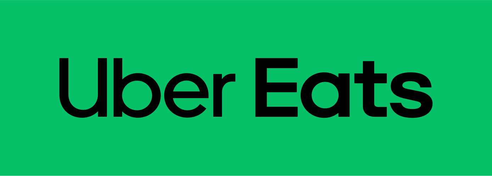

営業力を活かせる商材が欲しい
Uber Eatsの加盟店開拓へ
これまでの営業経験を活かし、飲食店へのご案内とアポ連携から始められます。


法人企業様向けFlagKの紹介代理店パートナー募集
飲食店との接点づくりは貴社で、
提案から掲載まではFlagKにお任せください。
飲食店とのつながりを新たな売上に
既存のお客様への追加提案や新規開拓に、Uber Eatsをご活用ください。
一次代理店FlagKの報酬制度
取次成果率95％のFlagKが、現場で磨いた提案ノウハウとスクリプトを活かし、商談から掲載まで担当。案件ごとの進捗を管理し、貴社がつないだ飲食店との接点を、報酬につながる成果へと育てます。
飲食店の紹介からスタートし、受注や出店手続きまで担うことで報酬単価アップも目指せます。
全代理店平均60％に対し、FlagKは95％！
今ある営業力を活かせる新しい商材を探している
既存の顧客接点から提案の機会を広げたい
クロージングや導入作業まで自社で抱えるのは難しい
初期投資を抑えて新たな加盟店開拓事業を始めたい
その営業力・顧客基盤を、
Uber Eatsの加盟店開拓に活かしませんか？
飲食店との商談アポイントをFlagKへ。提案から掲載まで引き継ぎます。
貴社が担当
Uber Eatsに関心のある飲食店との商談アポイントを、FlagKへつないでいただきます。
FlagKが担当
FlagKの担当者が店舗と商談し、導入のご案内から掲載作業まで進めます。
FlagKから貴社へ
事前にご案内した成果条件を満たした案件について、貴社へ報酬をお支払いします。
営業力を活かせる商材が欲しい
これまでの営業経験を活かし、飲食店へのご案内とアポ連携から始められます。
既存顧客への提案を増やしたい
今ある顧客接点を、新たな商談の機会に。既存の営業活動に組み込めます。
商談・掲載まで抱えるのは難しい
紹介・アポ連携から始める場合、連携後の商談・クロージング・掲載作業はFlagKが担当します。
所定の成果条件を満たした案件に応じて、代理店報酬をお支払いします。
報酬単価・成果条件・支払い時期の詳細は、
お打ち合わせでご案内します。

営業体制に応じて、担当業務を広げられる
導入に関心のある店舗のアポイントを連携。
研修・スクリプトを活用。店舗から導入の承諾を得るまで担当。
掲載に必要な情報の取次まで担当範囲を広げます。
出店取次を担当する場合は、専任のバックヤード責任者を設けるなどの体制整備が必要です。出店取次には、専任のバックヤード責任者などの
体制整備が必要です。

トークスクリプト
現場で使っている提案の言葉を、貴社の営業にも。飲食店向けのトークスクリプトを提供します。最初に何を話すか迷わず進められるよう、営業トークを用意しています。

営業・クロージング研修
Uber Eatsの知識から、店舗への提案・商談の進め方まで。営業開始に向けて研修で確認できます。サービスの知識から提案の進め方まで。営業を始める前に、研修で確認できます。
営業開始後も、案件の進め方や営業上の課題を専属担当にご相談いただけます。
「まずは条件を知りたい」という方も、お気軽にご相談ください！
事業内容・営業体制・ご希望を伺います。
業務と報酬条件、進め方をご案内します。
業務・条件を確認し、契約を進めます。
スクリプトや営業リスト、案件の連携方法を共有します。
店舗へのアプローチを開始。専属担当が支援します。
代理店パートナー制度
まずは、現在の事業や営業体制、ご希望をお聞かせください。どこまでの業務を担当いただくかを相談し、報酬条件や必要な準備をご案内します。


新たな収益源を求め、既存の飲食店顧客にUber Eatsを追加提案。これまでの関係を活かして加盟店を開拓しました。
既存のお客様への追加提案が報酬につながり、3か月目の月間報酬は初月を上回りました。
飲食店向け営業は未経験から開始。サービスと出店の流れを学び、商談の振り返りを通じて提案方法を改善しました。
Uber Eats 一次代理店
株式会社FlagKはUber Eatsの一次代理店です。導入提案から掲載までの実務経験をもとに、研修・スクリプト・案件管理で代理店様の営業活動を支援します。Uber Eatsの一次代理店として、加盟店開拓から商談・掲載まで法人パートナーの活動を支援しています。

今回の募集は法人様のみを対象としています。
個人事業主の方は募集対象外です。
Uber Eatsの導入に関心のある店舗との商談アポイントをFlagKへ連携いただきます。その後のクロージングと掲載作業まで対応します。連携条件や具体的な運用はお打ち合わせでご案内します。
ご紹介いただいた店舗が、あらかじめご案内した成果条件を満たした場合に報酬をお支払いします。アポイントの連携件数だけで報酬が決まる仕組みではありません。報酬単価・成果条件・支払い時期の詳細は、担当業務とあわせてお打ち合わせでご案内します。
活動に必要な費用の範囲や条件は、担当いただく業務とあわせてお問い合わせ時にご案内します。
はい。トークスクリプト・営業リストの提供と研修で支援します。既存の営業リソースを活かした紹介・アポイント連携から始められます。今回の募集は法人様が対象です。
営業体制や実績に応じて、紹介から口頭受注・出店取次へ段階的に進めます。口頭受注は店舗から導入の承諾を得る業務、出店取次は掲載に必要な情報を取り次ぐ業務です。担当業務に応じた報酬条件と、必要な体制は個別にご案内します。
活動エリアや営業体制に応じた条件・進め方をご案内します。お問い合わせ時に現在の事業内容や活動地域をお知らせください。
中長期でのパートナー活動をお考えの法人様からのご相談をお待ちしています。事業計画や稼働イメージを伺い、取り組み方をご提案します。
次の営業商材をお探しなら、一度お話ししませんか？貴社の営業体制に合う始め方と、報酬条件をご案内します！